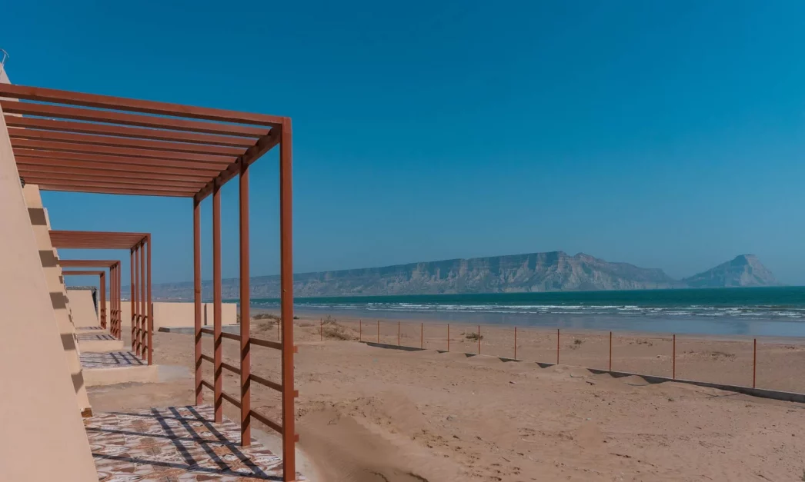

<div class="portfolio-single-load clearfix">
    <div class="custom-full-width-box">
        <div class="custom-container">
            <div class="custom-row align-items-center">
                <div class="custom-image-column">
                    
                </div>
                <div class="custom-text-column">
                    <h2 class="custom-heading">Ormara Beach</h2>
                    <p class="custom-paragraph">
                        
                        Situated along the pristine coastline of the Arabian Sea, Ormara Beach is a tranquil retreat in the heart of Balochistan. With its golden sands, azure waters, and gentle sea breeze, this idyllic beach offers the perfect escape from the hustle and bustle of city life. Visitors can unwind on the shores, soak up the sun, and enjoy a refreshing swim in the clear waters. For the more adventurous, thrilling water sports such as snorkeling and jet skiing are available, providing an adrenaline-filled experience against the backdrop of stunning natural beauty.
                    </p>
                </div>
            </div>
        </div>
    </div><!-- .custom-full-width-box end -->

</div><!-- end single-project -->
